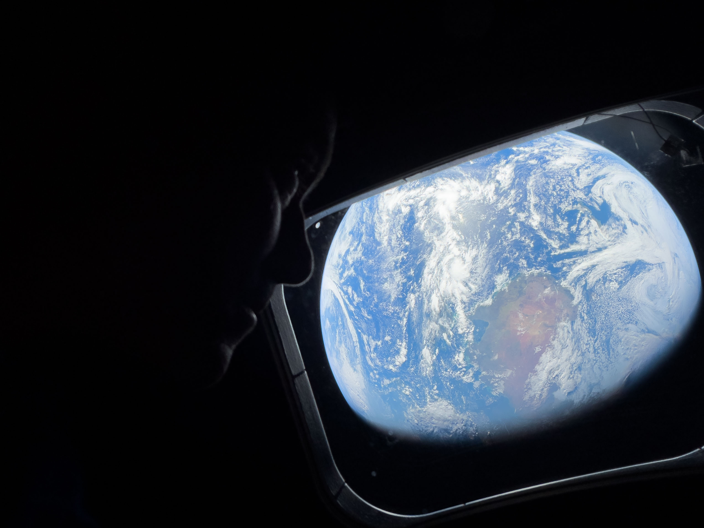
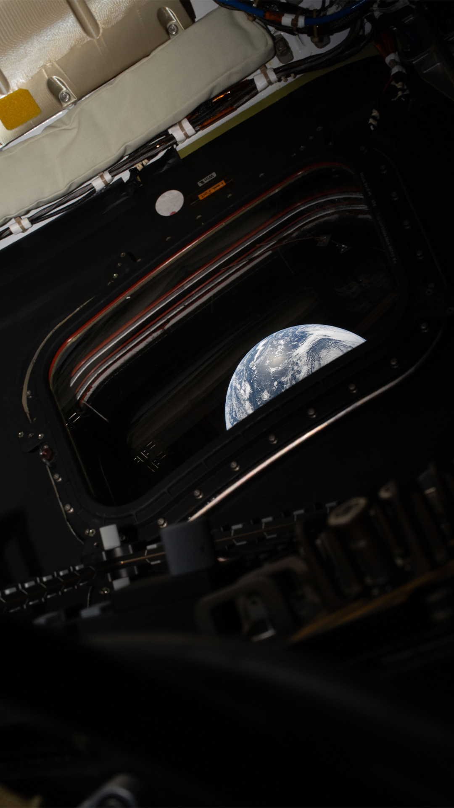
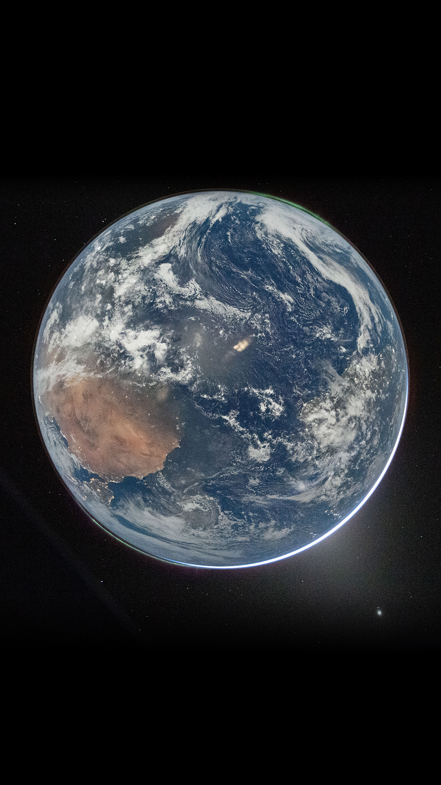
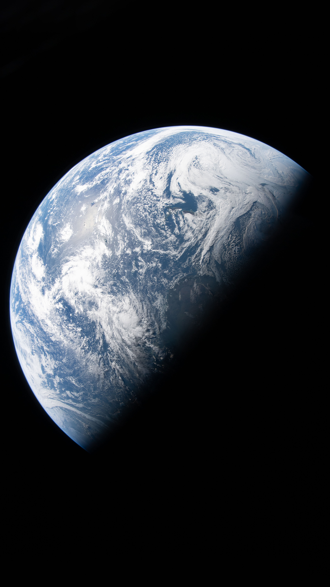
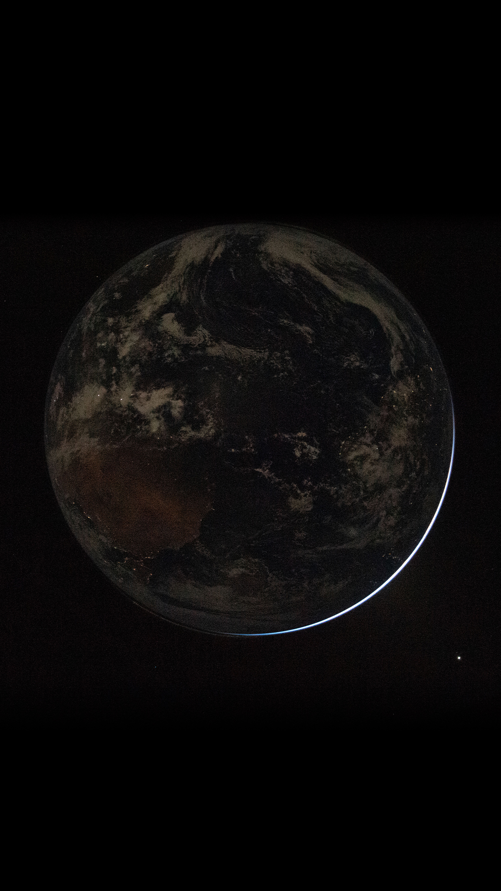
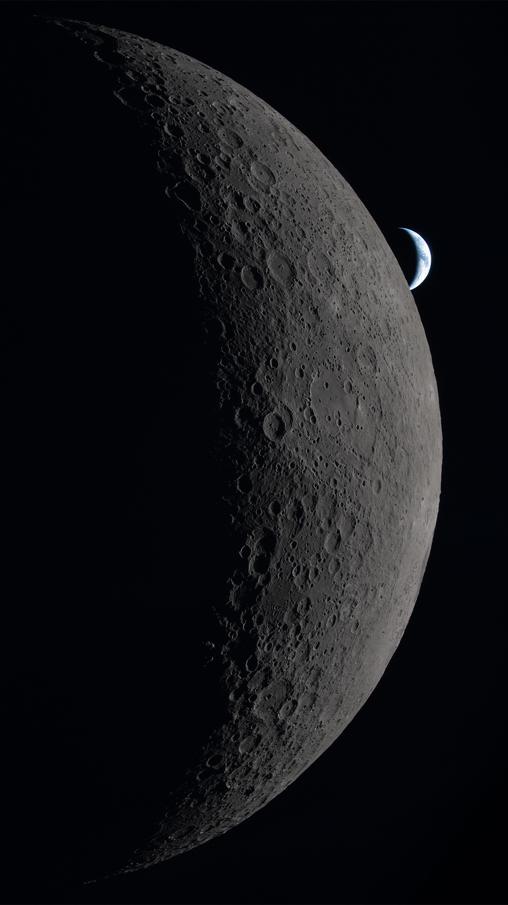
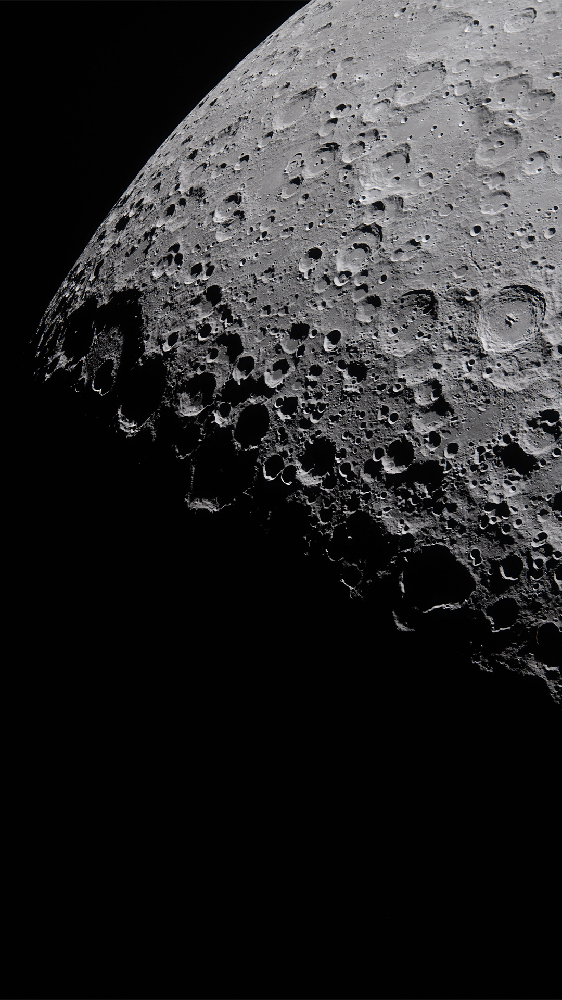
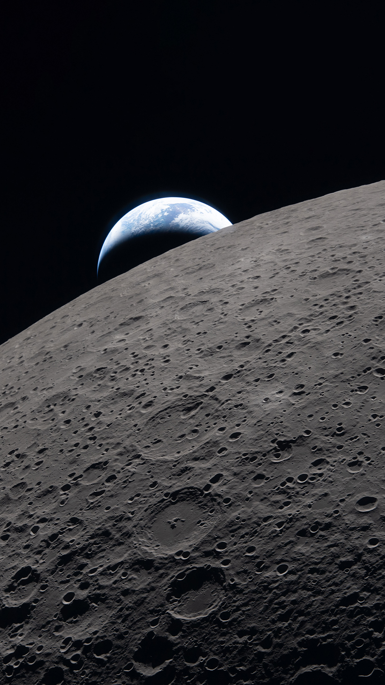
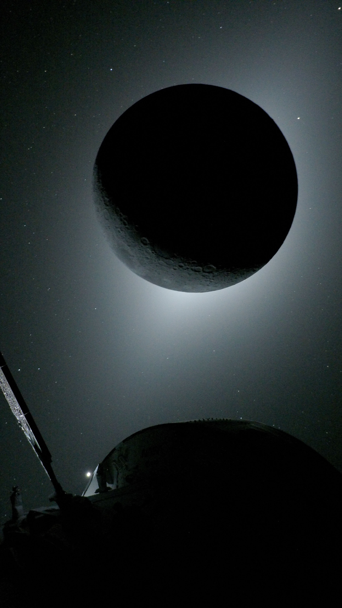
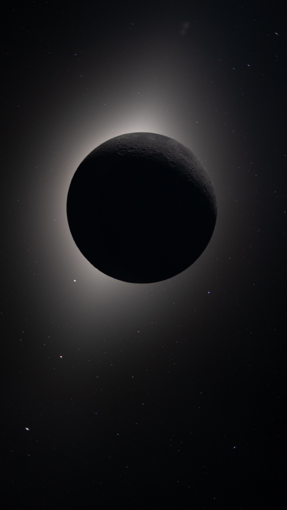

Crescent Earth
Download Image
A slim, luminous curve of home.
◈ WINDOW LOG 02 ◈
Earth, Moon, eclipse, and return—every image is available to download.
Click an image or its download link to save the original high-resolution file.
A slim, luminous curve of home.

The spacecraft frame makes the view feel intimate and human.

A blue horizon against a black sky.

Earth fills the glass in a crew-window view.

Earth rises beyond Orion's interior.

A glowing rim marks the boundary between day and night.

Spacecraft hardware shares the frame with a luminous crescent beyond.

Craters, basins, and rugged lunar geography.

A far-side edge with Earth appearing beyond it.

Crater rims cast crisp shadows at the terminator.

The blue planet slips behind a silver lunar horizon.

An eclipse halo frames the dark lunar disk.

A black lunar silhouette floats inside a pale corona.

The mission ends with a splashdown beneath bright recovery canopies.